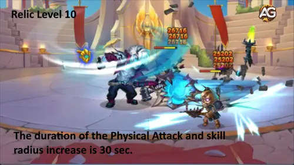
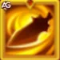
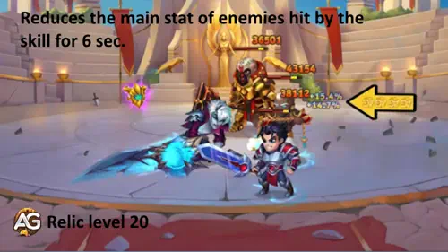
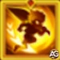
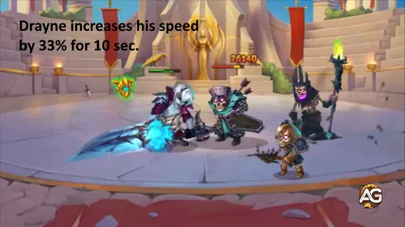
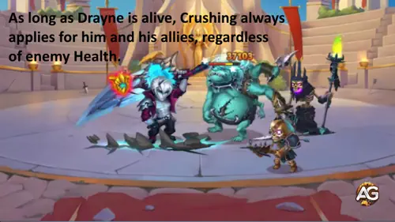
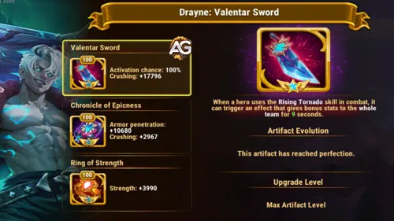

ドレインガイド：復活を封じる最強カウンター ヒーローウォーズ アライアンス
- 執筆: Alexandre Domingos. .
勝ち切る寸前で、カイラとエイダンが味方を復活させて形勢をひっくり返す…そんな展開にうんざりしてない？ そこで登場するのがドレイン。異世界から来た無双の剣士で、戦場の常識を変える存在だ。この冷酷な前衛ファイターは、ただ大ダメージを出すだけじゃない。彼が倒した敵はそのまま戻ってこない。もうイライラする復活に悩まされない。
ドレインは永遠の道に所属し、ゲームを動かす能力を持つ。自分と自分の後ろにいる味方全員にダメージ増加を付与するのが特徴だ。これにより、敵のHPが50%未満になるとチーム全体の与ダメージが増え、接戦は確実な処刑に変わる。アスタロスの踏ん張りやルーファスの守りに苦しんでいるなら、ドレインはまさに求めていた答えになる。

ヒーローウォーズ アライアンスのドレインとは？
- 🗡️ グリフクラス: ウォリアー
- 📍 ポジション: 前衛
- 💪 メインステータス: 力
- ⚔️ メインロール: ファイター
- 🏛️ 所属: 永遠の道
- 💎 ソウルストーン入手: 特別イベント
- 🤝 相性の良い編成: コーブス, モリガン, オクタヴィア, ダンテ, テンプス
- 🐉 ヒドラ評価: 未定
ドレインの最大の特徴はダメージ増加の付与だ。ダメージ増加は、HPが50%未満の敵に対して、与えるダメージ（物理・魔法・純粋すべて）を増加させるステータス。ドレインはこのバフを自分と後ろの味方全員に与えるため、チーム全体が「仕留める力」に特化した処刑部隊になる。
そして最重要ポイント: ドレインが倒した敵は復活できない。この一点だけで、カイラ、エイダン、ルーファス、アスタロスのような復活・粘り込み系の人気メタに対して強烈なカウンターになる。
ドレイン — 長所と短所 (ヒーローウォーズ アライアンス)
✅ 長所
- 蘇生対策: ドレインが倒した敵は蘇生できず、カイラやエイダンのような蘇生中心の編成に強いカウンターとなる。
- ダメージ増加バフ: 自身と後ろにいる味方に強力なダメージ増加を付与し、HPが低い敵に対する全ダメージを増加させる。
- 高いダメージ出力: ライジング トルネードは強力な範囲ダメージを与え、攻撃範囲と物理攻撃を増加させる。
- 前線向け: 前線のファイターとして優れたステータスを持ち、コーブス、オクタヴィア、ダンテ、テンプスと相性が良い。
- 処刑特化: スキルとパッシブで瀕死の敵を確実に仕留める能力がある。
❌ 短所
- 配置依存: ダメージ増加のバフは後ろの味方のみ対象のため、編成と配置が重要。
- エネルギー要求: ライジング トルネードなどのスキルはエネルギー管理が必要。
- メタ依存: 蘇生がいない編成には効果が薄れる場合がある；Hydra Tier Listには未掲載。
- ビルド依存: 最大効果を得るにはパワー チャージとライジング トルネードの優先強化が必要。
ドレイン レジェンダリー レリック スキル アップグレード優先順位 – ヒーローウォーズ アライアンス
ドレインは強力なレジェンダリー レリック エンハンスメントを受けました!2つの全く新しいレジェンダリー アビリティを含む、全6つのスキルの最適なアップグレード順序を発見し、戦場を支配しましょう。
1stスキル – ライジング トルネード(スプレマ)
コピー不可! ドレインは剣を回転させて壊滅的なトルネードを発生させ、前方の全ての敵を3回攻撃します。しかし、ここからが興味深いところです:発動時、ドレインは文字通りサイズが大きくなり、戦場で恐ろしい存在となります!
9秒間、彼はフィジカル アタックを増加させ、全てのスキルのリーチが伸びます。これはドレインが「ビースト モード」に入るようなもので、より大きく、より強く、安全な距離を保とうとする者を罰するためのより長いリーチを持ちます。
ダメージの仕組み: 3回のヒットそれぞれが(150% フィジカル アタック + 12,000)のダメージを与えます。完全に進化すると、潜在的に巨大なバースト ダメージになります!

スキル アニメーション 情報
- フィジカル ダメージ(1ヒット毎): (150% フィジカル アタック + 12,000)
- フィジカル アタック増加: (20% フィジカル アタック + 3,000)
- ヒーロー サイズとスキル レンジ増加: 20%
- 持続時間: 9秒
- ヒット数: 3
- キーワード: フィジカル ダメージ、バフ、コピー不可
エボリューション優先度: 高 – これはドレインのスプレマ スキルです!進化させることで、彼のダメージ出力と獲得するフィジカル アタック バフの両方が増加します。このスキルが強いほど、9秒間のパワーアップ中に他の全てのアビリティがより強く攻撃します。パワー チャージの次にこれを優先してください。
ライジング トルネード レジェンダリー エンハンスメント
必要条件: レリック レベル10
レジェンダリー エンハンスメントは、ライジング トルネードを短いバーストから長時間のパワーハウスに変えます!フィジカル アタック増加とスキル半径拡大の持続時間が9秒から驚異的な30秒にジャンプします。これは元の持続時間の3倍以上です!これは、ドレインがほとんどの戦闘の大半で強化された「ビースト モード」に留まることを意味し、使用する全てのアビリティで強化されたダメージを与え、より遠くに到達します。
- 強化された持続時間: 30秒(9秒から増加)
- キーワード: レジェンダリー バフ、拡張持続時間

2ndスキル – シャター ストライク
アグレッシブなプレイに報いるスキルです!3回の基本攻撃毎に、ドレインは周囲の全ての敵にダメージを与える強力な攻撃を解き放ちます。最高の部分は?この攻撃も基本攻撃としてカウントされます!
なぜこれが重要か? Hero Warsでは、基本攻撃はヒーローのエネルギーを生成します。シャッターストライクが基本攻撃としてカウントされるため、ドレインは本質的にほとんどのヒーローよりも速くエネルギーを獲得します!これは、より頻繁なスプレマ スキルの発動を意味し、長期戦では大きな利点となります。
ダメージ計算式: 各シャター ストライクは近くの全ての敵に(200% フィジカル アタック + 18,000)のダメージを与えます。自動的にトリガーされる組み込みのクリーブのようなものです!

スキル アニメーション 情報
- フィジカル ダメージ: (200% フィジカル アタック + 18,000)
- トリガー: 3回の基本攻撃毎
- エリア: ドレイン周囲の全ての敵
- キーワード: フィジカル ダメージ、AoE、基本攻撃としてカウント
エボリューション優先度: 中高 – ダメージ スケーリングは優れていますが、このスキルは自動的にトリガーされ、基本ダメージは既に堅実です。最初にパワー チャージとライジング トルネードに集中し、その後クリーブ ダメージを増加させるためにここに投資してください。

レジェンダリー エンハンスメント — シャター ストライク
必要条件: レリック レベル20
レジェンダリー エンハンスメントは、シャター ストライクに強力なデバフを追加します!ドレインがクリーブ攻撃をトリガーする度に、ヒットした敵は6秒間メイン ステータスが減少します。これは実際にはどういう意味でしょうか?アスタロスやジュウのような敵のストレングス系ヒーローは、ヘルスとフィジカル アタックの両方を失います。セレステやフェイスレスのようなインテリジェンス系ヒーローはマジック アタックを失います。ジュウのようなアジリティ系ヒーローはフィジカル アタックとアーマーを失います。このデバフはダメージ増加と美しく重なります — 敵は弱くなり、処刑も容易になります!
- メイン ステータス減少: (フィジカル アタック 10% + 25)
- デバフ効果: ヒットした敵のメイン ステータスが減少
- 持続時間: 6秒
- キーワード: レジェンダリー デバフ、ステータス減少

アレクサンドル ティップス: シャター ストライクはダンテのスキルと完璧に組み合わさります。ドレインのシャター ストライクによるメイン ステータス減少効果は強力なコンボを生み出し、フロントラインを敵タンクに対してより効果的にします。
3rdスキル – パワー チャージ
これはドレインを定義するスキルです! 🔥 発動時、ドレインは前方に突進し、最も近い敵にダメージを与え、自分自身と後ろに位置する全てのアライに強力なダメージ増加バフを付与します!
ダメージ増加とは? これは、50%以下のヘルスの敵に対して全ての与ダメージ(フィジカル、マジック、ピュア ダメージ)を増加させる壊滅的なステータスです。バックライン全体 – メイジ、マークスマン、サポート – 全てが負傷した敵にトドメを刺すためにボーナス ダメージを与えることを想像してください。それがダメージ増加の力です!
バフ計算式: ドレインは7秒間、ダメージ増加を(50% フィジカル アタック + 6,000)増加させます。一方、チャージ自体はドレインの最大ヘルスに基づいて(15% ヘルス + 24,000)のダメージを与えます。

スキル アニメーション 情報
- フィジカル ダメージ: (15% ヘルス + 24,000)
- ダメージ増加: (50% フィジカル アタック + 6,000)
- 持続時間: 7秒
- バフ タイプ: 自分 + ドレインの後ろの全てのアライ
- キーワード: バフ、フィジカル ダメージ、チーム サポート
エボリューション優先度: 非常に高 – これを最初にマックスにしてください! これはドレインのシグネチャー アビリティであり、チームに彼を欲しい理由です。より高いダメージ増加バフは、チーム全体が敵にトドメを刺すのがより致命的になることを意味します。ダメージ部分もドレインのヘルスでスケールし、彼をより頑丈にしながらより強く攻撃させます。このスキルは良いチームを処刑部隊に変えます!
4thスキル – ファイナル ヴァーディクト(パッシブ)
究極のアンチ リバイブ武器! ⚔️ このパッシブ スキルは、ドレインをレザレクション チームにとっての悪夢にするものです。敵が特定のヘルス閾値を下回ると、ドレインの攻撃とスキルは即座に彼らを殺します – 質問なしで!
しかし待ってください、まだあります:ドレインに殺された敵は復活できません! アスタロスのセカンド ライフ、ルーファスのディバイン プロテクション、ケイラのリバイバル チェーン、エイダンのリジェネレーション トリックに別れを告げましょう。ドレインがファイナル ヴァーディクトを下すと、それは本当に最終的です。
処刑閾値計算式: 敵のヘルスが(10% ヘルス + 24,000)を下回ると処刑されます。ドレインの最大ヘルスが高いほど、より早く処刑をトリガーできます!

スキル アニメーション 情報
- 処刑ヘルス閾値: (10% ヘルス + 24,000)
- 特殊効果: 殺された敵は復活できない
- タイプ: パッシブ
- キーワード: 処刑、アンチ レザレクション、パッシブ
エボリューション優先度: 高 – 処刑閾値はドレインの最大ヘルスでスケールし、レベルアップやギアへの投資で自然に増加します。しかし、24,000の基本値はスキル エボリューションで成長し、処刑をより早くトリガーさせます。アンチ リバイブの支配を最大化するために、パワー チャージの次にこれを優先してください。

5thスキル – バトル ラッシュ(レジェンダリー)
スピードは誰も予見できない武器です! 💨 この全く新しいレジェンダリー スキルは、ドレインを決して諦めない容赦ない戦士に変えます。15秒毎に、ドレインは高められた戦闘意識の状態に入り、10秒間スピードを33%増加させます。
この期間中、ドレインは戦場をより速く移動し、より頻繁に攻撃し、アビリティをより頻繁に使用します。この加速は、より多くの基本攻撃を意味し、シャター ストライクをより早くトリガーし、エネルギーをより速く生成し、より多くのライジング トルネードにつながります。これは美しい破壊の連鎖反応です!
こう考えてください: 通常のスピードで戦うドレインを想像してください — 彼は既に恐ろしいです。今度は彼が全てを33%速く行っていることを想像してください。より多くの攻撃、より多くのクリーブ、より多くのスプレマ発動、そしてファイナル ヴァーディクトによるより多くの処刑。スピード ブーストは本質的に彼の全キットのダメージ マルチプライヤーです。
スキル アニメーション 情報
- スピード増加: 33%
- 持続時間: 10秒
- クールダウン: 15秒
- 必要条件: レリック レベル1
- キーワード: レジェンダリー、スピード バフ、パッシブ

エボリューション優先度: 中高 – このレジェンダリー スキルはレリック レベル1で自動的にアンロックされ、個別のスキル エボリューションを必要としません。ステータスで直接スケールしませんが、一貫した33%のスピード ブーストは、ドレインの他の全てのアビリティを間接的に大幅に増幅します。最初に4つのメイン スキルにエボリューション リソースを集中してください。
6thスキル – ダメージ増加 フォース(レジェンダリー)
これは全てを変えます! 🔥 ダメージ増加 フォースは、ドレインがもたらす最も強力なレジェンダリー スキルと言えます。ドレインが生きている限り、パワー チャージからのダメージ増加 ステータス バフは、敵のヘルスに関係なく、彼とアライに常に適用されます!
なぜこれがゲームチェンジングなのか? 通常、ダメージ増加は50% HP以下の敵に対してのみダメージを増加させます。ダメージ増加 フォースがアクティブの場合、チーム全体が戦闘の最初の秒からそのボーナス ダメージを与えます!これは、メイジ、マークスマン、サポートが全て最初から強く攻撃することを意味します — 敵が負傷した時だけではありません。これはダメージ増加を「フィニッシング ムーブ」バフからパーマネント ダメージ アンプリファイアーに変えます。
チームがすぐにフル ダメージ増加 ダメージで戦闘を開始することを想像してください。敵タンクはより速く溶け、ミッドライン ヒーローはランプアップする機会を得られず、ヒーラーは持続的な出力に追いつけません。ダメージ増加 フォースはドレインのキットの唯一の制限を取り除き、全てのチーム ファイトを数学的確実性に変えます。
スキル アニメーション 情報
- 効果: ダメージ増加は敵のヘルスに関係なく常に適用
- 条件: ドレインが生きている限り
- 適用先: ドレイン + 全てのアライ
- 必要条件: レリック レベル30
- キーワード: レジェンダリー、ダメージ増加、パッシブ、チーム全体

エボリューション優先度: 非常に高 – このレジェンダリー スキルはレリック レベル30でアンロックされ、個別のスキル エボリューションを必要としません。しかし、レリック レベル30に到達することは、全てのドレイン プレイヤーにとって最優先事項であるべきです!パーマネント ダメージ増加適用は、チームの戦い方を根本的に変えます。パワー チャージのダメージ増加バフと組み合わせると、これはドレインのチームをゲーム全体で最も危険な処刑部隊にします。
📊 ドレイン スキル優先順位サマリー
| スキル | 優先度 | 理由 |
|---|---|---|
| 3rd – パワー チャージ | 非常に高 | コア アビリティ!チーム全体のダメージ増加バフ。 |
| 6th – ダメージ増加 フォース ⭐ | 非常に高 | レジェンダリー:ダメージ増加が常に適用!レリックLv30に早急に到達。 |
| 1st – ライジング トルネード | 高 | スプレマ バースト + セルフ バフ。レジェンダリー:30秒持続! |
| 4th – ファイナル ヴァーディクト | 高 | 処刑パッシブ + アンチ レザレクション。 |
| 5th – バトル ラッシュ ⭐ | 中高 | レジェンダリー:より速い攻撃のための33%スピード ブースト。 |
| 2nd – シャター ストライク | 中高 | 良いAoE + レジェンダリー ステータス減少デバフ。 |
ドレインのおすすめスキン — ヒーローウォーズ アライアンス
ドレインのスキンは処刑性能に直結する主要ステータスを強化します。HPスケーリングと物理攻撃のシナジーを最大化するため、まずは力（力）を優先しましょう。

デフォルトスキン – 力（力）
デフォルトスキンは力 +1,365を提供し、ドレインに大きなステータス上昇を与えます。力はメインステータスのため、各ポイントがHPと物理攻撃の両方に変換され、ドレインの全スキルの基礎を強化します。
- 力由来のHP: +54,600 HP
- 力由来の物理攻撃: +1,365
このスキンはパワー チャージのダメージ増加バフ（物理攻撃に依存）を直接強化し、ファイナル ヴァーディクトの処刑閾値（HP依存）も押し上げ、全スキルのダメージを増幅します。汎用性が高く非常に有用です。
進化優先度: 最優先 – まずこれを最大化してください。力はHP（処刑閾値）と物理攻撃（ダメージ増加とダメージ）に同時に効く最も効率的な投資です。

ゴッデスガーディアン スキン+ – HP（Health）
ゴッデスガーディアン スキン+はHP +213,290を提供します。単一ソースとして非常に大きなHP増加で、生存力とHP依存スキルの威力を大幅に高めます。
- HP: +213,290 HP
この巨大なHPはパワー チャージのダメージ（HP15% + 24,000）を増やし、ファイナル ヴァーディクトの処刑閾値（HP10% + 24,000）も高めるため、戦闘で早期に処刑が発動しやすくなります。また生存性が上がることで複数回のダメージ増加付与が可能になります。
進化優先度: 最優先 – デフォルトスキンと並行して優先してください。力を最大化した後でも、純粋なHP強化として非常に価値があります。

リバース（Rebirth）スキン – アーマー貫通（アーマー貫通）
リバーススキンはアーマー貫通 +10,650を提供します。タンク系前衛（アスタロスなど）に対する物理ダメージの通りを良くし、硬い相手に対して有効です。
- アーマー貫通: +10,650
生ダメージを伸ばす点で有用ですが、ドレインのスキル式に直接スケールするステータスではないため、優先度はデフォルトやHPスキンの次になります。
進化優先度: 高 – 第三候補として優秀。硬い相手を切り崩す場面で価値を発揮します。

オブリビオン（Oblivion）スキン – 防御（Armor）
オブリビオンスキンはアーマー +10,650を提供します。物理被ダメージを軽減し、前線としての生存性を高めます。
- アーマー: +10,650
耐久面で有用ですが、攻撃能力やスキル式に直接影響を与えるわけではないため、攻撃寄りの投資が終わった後に検討するのが良い選択です。
進化優先度: 中 – オフ攻撃系スキンを優先した後に検討してください。物理被ダメが多い相手に対して有効です。
ドレインのアーティファクト進化優先度（ヒーローウォーズ アライアンス）
アーティファクトはドレインの伸び方（パワーカーブ）を大きく左右する。ダメージ増加バフと処刑ラインを強化できるステータスを中心に伸ばすと、戦場での支配力が最大になる。


第1アーティファクト – ヴァレンターの武器（剣）
武器アーティファクトはダメージ増加 +17,796。ドレインがライジング トルネード（必殺）を発動すると、このアーティファクト効果が発動し、チーム全体に9秒間の追加ステータスを付与する。
- ダメージ増加: +17,796
- 発動: 必殺スキルで発動
- 持続: 9秒（チーム全体）
パワー チャージのダメージ増加バフと重なり、HP50%未満の敵に対してチーム全体が凶悪になる。ライジング トルネードの9秒強化とも噛み合いが良く、強化時間中の総合火力が伸びる。
進化優先度: 最優先 – ダメージ増加はドレインの核。大きな上昇量に加えてチーム全体に発動するのが強すぎる。力の指輪 ちからのゆびわと並行して優先しよう。

第2アーティファクト – エピック年代記の書
本アーティファクトはアーマー貫通 +10,680とダメージ増加 +2,967の複合。ダメージの通しやすさと処刑補助の両方を伸ばせる。
- アーマー貫通: +10,680
- ダメージ増加: +2,967
アーマー貫通で硬い前衛への削りが改善し、追加のダメージ増加でチームのフィニッシュ性能も底上げできる。汎用性が高い。
進化優先度: 高 – 二段目として優秀。ダメージ増加の量は武器ほど大きくないが、アーマー貫通とセットで価値が出る。

第3アーティファクト – 力の指輪
リングは力 +3,990。力はドレインのメインステータスなので、生存力と火力の両方が大きく伸びる。
- 力: +3,990
- 力由来のHP: +159,600 HP
- 力由来の物理攻撃: +3,990
この1つでHPが増え（ファイナル ヴァーディクトの処刑ラインが上がる）、パワー チャージのダメージ（最大HP依存）も伸び、さらに物理攻撃が増えてダメージ増加バフと全スキル火力も上がる。効率が非常に高い。
進化優先度: 最優先 – ドレインで最も効率が良いアーティファクト候補。力の伸びがキット全体に効く。武器アーティファクトと並行して最大化するのがベスト。
ドレインのグリフ強化優先度（ヒーローウォーズ アライアンス）
グリフは最大まで育てると大きなステータス差になる。ドレインのダメージ増加運用と「処刑で勝つ」プレイに直結するものから優先しよう。

第1グリフ – 物理攻撃
ライジング トルネード、シャター ストライクなどの物理スキル火力を直接上げ、さらにパワー チャージのダメージ増加バフの伸びにも関わる。
レベル80のステータス: 物理攻撃 +8,340
強化優先度: 最優先 – パワー チャージのダメージ増加（50% 物理攻撃 + 6,000）、ライジング トルネードのダメージと自己バフ、シャター ストライクのAoEすべてに効く。チーム支援を最大化するなら必須。

第2グリフ – HP
HPはドレインの生存力を上げるだけでなく、パワー チャージのダメージ（15% Health + 24,000）とファイナル ヴァーディクトの処刑ライン（10% Health + 24,000）を直接強化する。
レベル80のステータス: HP +122,800
強化優先度: 高 – HPが増えるほど処刑が早く入り、パワー チャージも強くなる。前衛として長く残り、複数回のダメージ増加バフを配れるのも大きい。

第3グリフ – アーマー貫通
物理攻撃が敵の防御を抜きやすくなり、タンクや硬い前衛に対する削りが安定する。
レベル80のステータス: アーマー貫通 +12,850
強化優先度: 中～高 – 硬い敵に有効だが、ドレインのスキル式に直接かかるステータスではない。物理攻撃とダメージ増加の後に回すのが基本。

第4グリフ – ダメージ増加
HP50%未満の敵に対して、ドレインが与えるダメージ（物理・魔法・純粋すべて）が増える。ダメージ増加はドレインの象徴で、このヒーローの核そのもの。
レベル80のステータス: ダメージ増加 +8,340
強化優先度: 最優先 – ドレインの目的そのもの。パワー チャージのダメージ増加バフと組み合わさることで、ドレインと味方のフィニッシュ性能が一気に跳ね上がる。物理攻撃と並ぶ最優先枠。

第5グリフ – 力
力はドレインのメインステータスで、HPと物理攻撃を同時に伸ばせる。複数の要素に効く効率の良い投資になる。
レベル80のステータス: 力 +2,110
- 力由来のHP: +84,400 HP
- 力由来の物理攻撃: +2,110
強化優先度: 高 – HP（処刑ライン）と物理攻撃（ダメージ増加バフ）を同時に伸ばせる。コアのグリフを伸ばした後の堅実な全体強化。
📊 ドレイングリフ優先度まとめ
| グリフ | 優先度 | 理由 |
|---|---|---|
| 第4 – ダメージ増加 | ダメージ増加バフと各種ダメージに直結。 | 処刑ラインとパワー チャージを強化。 |
| 第1 – 物理攻撃 | 最優先 | ダメージ増加バフと各種ダメージに直結。 |
| 第5 – 力 | 高 | HPと物理攻撃を同時に伸ばせる。 |
| 第2 – HP | 高 | 処刑ラインとパワー チャージを強化。 |
| 第3 – アーマー貫通 | 中～高 | 硬い敵に有効だが、式に直接かからない。 |
ドレインのシナジー（ヒーローウォーズ アライアンス）
ドレインのスキルは特定のヒーローと強力に噛み合います。以下では、戦闘における相互作用やチーム編成での利点を分かりやすく説明します。

コーブスは敵の防御を下げ、Eternityの味方全員の物理攻撃と魔法攻撃を上げます。ドレインのパワー チャージが付与するダメージ増加バフと非常に相性が良く、HPの低い敵に対してEternity編成が凶悪な火力を出せるようになります。

ダンテは前衛の味方に干渉して敏捷性・力・知性を下げる動きをします。ドレインがパワー チャージでダメージ増加を付与すると、ダンテのダメージもよりフィニッシュに繋がりやすくなり、前線を崩しつつチーム全体のダメージを底上げできます。

オクタヴィアのミラーによる純粋ダメージは、ドレインのパワー チャージによるダメージ増加バフと非常に良く噛み合います。パワー チャージ: ドレインは自分と後ろの味方全員のダメージ増加を7秒間上げ、前方の近接敵を攻撃します。これにより、弱った敵に対する純粋ダメージの殲滅力が最大化されます。

テンプスのChronostasisは鎧と魔法防御を下げ、2.5秒間敵の行動を止めます（スキル・移動・回避不可）。この間にドレインがライジング トルネードを使えば、9秒間射程と物理攻撃が伸びた状態で固定された敵へ連続攻撃を行えるため、非常に高い殲滅効率を発揮します。
ドレインのおすすめチーム編成（ヒーローウォーズ アライアンス）
- オクタヴィア, アイリス, テンプス, ダンテ, ドレイン
- エイダン, ソムナ, テンプス, ヤスミン, ドレイン
- フォリオ, ソムナ, アイリス, バーナ, ドレイン
- オクタヴィア, ポラリス, ダンテ, バーナ, ドレイン
- オクタヴィア, アイリス, ダンテ, ドレイン, コーブス
- オクタヴィア, アイリス, モリガン, ドレイン, コーブス
- オクタヴィア, ハイディ, ネブラ, ドレイン, アンドバリ
- オクタヴィア, ハイディ, ネブラ, ドレイン, ダンテ
- エイダン, アイリス, テンプス, ドレイン, カイラ
- エイダン, グース, ドレイン, カイラ, ジュリアス
ドレインのおすすめチーム - 動画のおすすめ
結論
ドレインは前線の処刑者で、蘇生を阻止し、瀕死の敵を確実に仕留めることに長けています。優先して強化すべきはパワー チャージ、次にライジング トルネードです。最大効果を得るためには、コーブス、オクタヴィア、ダンテ、テンプスと組ませるのがおすすめです。
感想を聞かせて！
このドレインガイドは役に立った？わかりにくかった点や、改善してほしい点はある？Alexandre Gamesのコメント欄でぜひ意見を聞かせて。疑問の整理、感想、提案など自由に書いてOK。
下のボタンをクリックして開始：